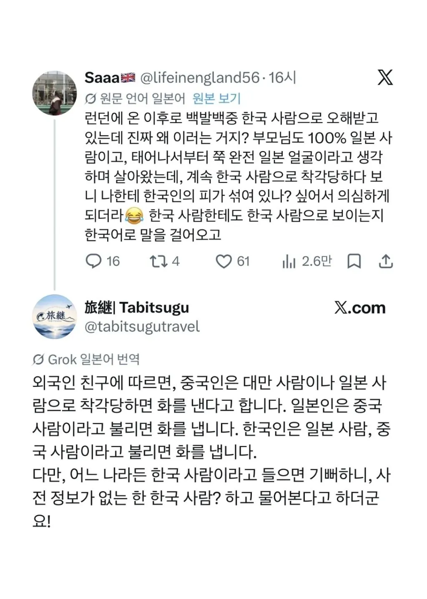

일본인 : 런던에서 100% 한국 사람으로 오해받고 있는데 진짜 왜 이러는 거지?
댓글
니하오? 하면 화나는데 곤니치와? 하면 걍 정정해줌 화는 안나더라고ㅋㅋ
한국인으로 보이나봐요 소리 듣고 싶은 답정너임
이악물고 듣고싶은말 안해주기 ㅋㅋ
그래도 예전엔 차이나? 재팬?(이 두개는 순서가 바뀔수도 있음) 둘 다 아니라고 코리아라고 하면 노스?부터 나왔는데 ㅋㅋ
그럼 '너하는거 따라서'라고 답해줘야지
빨리좀 알려주지
그건 알고 일부러 메기는거 아니냐?
거의 20년 전이라 ㅋㅋㅋ 뭐 이제와서 생각해보면 그럴수도 있긴 한데 당시 느낌으로는 그냥 인지도 이슈라고 생각 함 ㅋㅋ
노스를 만날 일이 평생 없을텐데 멕이는거지 ㅋㅋ
한 20년 전인데 그때 초등학생이라 그런걸 몰라서 못느꼈을수도 있긴 한데 예나 지금이나 북괴 위상은 여러모로 높아서 ㅋㅋㅋㅋㅋ
지금은 그런 개소리 들으면
Fucking Racist?? 라고 하면 됨
99% 인종차별임
글킨 해 ㅋㅋ
쓰읍.. 아직 못 나가겠는데 해외
비추 먹을거 같지만
난 저거 화내는거 이해가 좀 많이 안대드라
우리가 그냥 외국인한테 from us?나 시작을 영어로 입을 여는것처럼
쟤들도 걍 별 생각없이
아시아니깐 니하오 하는거 같아서
그냥 기분좋게 받아줌
저 니하오가 넌 한국사람이지만 중국인이라고 비꼬아야지 라는 기저를 가지고 있을거라고 생각하지 않음
무례라고는 생각할수 있는데 무지에서 오는 무례는 그닥 화낼 거리가 아니라고 생각함
너 참1깨 처럼 생김 ㅋㅋㅋ
넌 알고 하는거니깐 비꼬는거고
몰라서 그랬다는게 더 화남 ㅂㄷㅂㄷ
진짜 내가 참깨처럼 생겼다는거잖아
우리야 구분이 되니깐 알지
우리도 백인 흑인 중동 남미
이쪽 구분 전혀 못하잖아
확률상 차.ㅁ깨들만 봤으니 그렇구나 하는거겠지
야 근데 비슷한 옷 입혀놓으면 너도 백인이나 흑인을 나라 단위로 구분 못해 그건 걍 안되는거야 한중일도 입다물고 있으면 헷갈리는 경우 많은데
예~전 무지할때 얘기인데
제주도 게스트하우스에서 연박하는데 오늘 영국인이 예약했다는거야 그래서 저녁에 마주쳤길래
유 프롬 잉글랜드? 하니까 인상 팍 쓰면서 한숨쉬고 나가버리더라 ㅋㅋ
서양애들도 똑같음
의도는 그냥 진짜 인사하고 싶을뿐인거잖아
너가 영국인을 비꼴라는 의도는 없자너
저런 리액션이 이해 안된다는거지
비유 자체가 틀렸음. From US?는 최소한 국적을 물어보는 질문이고 영어가 공용어라 쓰는 거지 니하오는 묻지도 않고 중국인으로 단정 짓는 통보이고 네 논리대로면 백인 보자마자 묻지도 않고 봉주르 박는 거랑 똑같음
인종차별의 대부분은 악의가 아니라 바로 그 무지에서 나옴. 본인이 무례함을 못 느껴서 기분 좋게 받아주는 건 자유인데, 그걸 기준으로 남들의 정당한 분노까지 후려치는 게 제일 모순이지 그럼 넌 눈찢도 모르니까 봐줄거냐?
봉주르 박을수도 있지
그걸 보고 봉주르 하면서 저사람 꼴받으라고 봉주르 해야지
그러는 사람이 얼마나 되겠어
대다수는 그냥 인사하는 그런거지
그러니깐 딱히 화가 안나는거고 화내는게 이해각 안된다는거임
여기에 인종차별은 또 왜 나오는지도 모르겠어
니하오 ~ 하면 인종차별이고
안녕하세요 하면 아닌거야?
둘다 같은 인종인데
그렇더고 니하오가 만연한 인종차별 언어도 아니고
그런 단어를 몰라서 생기는 무례함은 말하는 사람이 전적으로 잘못하는거 맞고 그 기저가 인종차별이니
니.거 칭.챙총 이런건 무지함에서도 욕먹을게 맞지
단순 인삿말이고
그 주변국 언어를 썼다고 화내는게 이해가 안되는거지
나도 공감함
뭐 아프리카사람처럼 생겼다하고
아프리카 나라이름 아무거나 말했는데
걔 나라랑 원수인나라 찝은거라서 화내는거랑 비슷하긴하지
그래서 남미사람이 눈찢어도
왜 또 인종차별을 들고오냐
언어선택과 국적 맞추기에 대한 이야기에
눈찢는 이야기는 왜나옴
일본은 비슷한애들 있어서 별수없지
남부쪽애들은 80%이상이 한반도 도래인 유전자인데
중국인은 해외에서 중국인이냐고 물어보면 기분 안좋다고 하던데
ㅋㅋㅋ
워쓰 한궈런
자매품 : 와 딸이에요? 너무 예쁘다
저 댓글도 참 음습하다
한국 내려치기는 도저히 불가능하니까
저딴 말이나 하고 있네
난 해외 나가면 다 일본인인줄 알던데
심지어 오사카 갔을땐 일본 사람이 나한테 길물어봄
근데 국뽕이 아니라 한국사람이냐는 말들으면 좋아함
외국에서 인식이 아이돌 때문인지 한국인들은 스타일 좋고 외모 좋다는 인식이 심어져있긴함
중국인들 일본인들 한국인이냐고 물어보면 좋아하는건 팩트임ㅋㅋ
역시 중국인은 대만을 타국으로 보는군